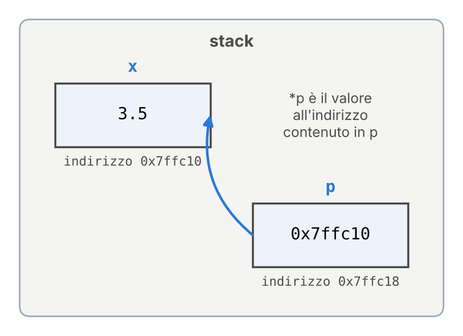
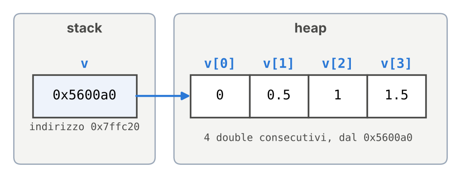
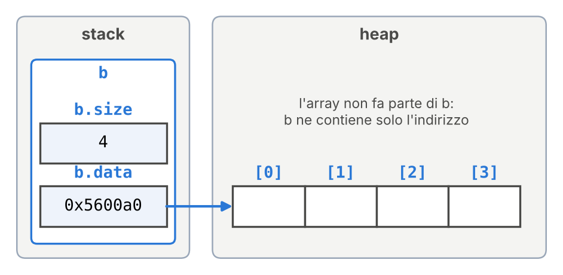

Programmazione Scientifica++: Lezione 9
Distruttori, RAII e Metodi Costanti
Argomenti di oggi
- Ripasso: puntatori e memoria, con i disegni della memoria
- Il distruttore (
~Classe): il metodo eseguito quando un oggetto viene distrutto - Il RAII (Resource Acquisition Is Initialization): una classe che libera da sola la memoria che ha allocato
- Metodi
const: metodi che non possono modificare l’oggetto - Argomenti di default nei costruttori
- Esercizio in classe: un array dinamico
Gli argomenti di oggi nel framework
- Distruttori e RAII. Nel framework
deletecompare una sola volta:randnumgen, il generatore di numeri casuali, crea connewnel costruttore l’oggetto che produce i numeri uniformi e lo distrugge condeletenel distruttore: è lo schema di oggi;- le matrici (
Matrix) sono matrici di Eigen: allocano la memoria quando vengono create e la liberano quando vengono distrutte, come vediamo oggi; - i layer di
Sequentialsono creati nell’heap, ma li possiede la rete: quando la rete viene distrutta, distrugge anche i suoi layer e ne libera la memoria.
Gli argomenti di oggi nel framework (segue)
- Metodi
const. I metodi che leggono soltanto sonoconst:get_type() constrestituisce il nome del layer,size() constil numero di layer diSequential. - Argomenti di default nei costruttori. Gli argomenti di default sono quelli delle funzioni della Lezione 05; oggi li vediamo in un costruttore. Il costruttore di
DenseLayerèDenseLayer(int Nn, int Ni, int type = 0, int distro = 1):Nnneuroni,Niingressi;typeedistroscelgono come inizializzare i pesi. Chi indica soloNneNiottienetype = 0edistro = 1.
Ripasso: variabili e indirizzi
- 1
-
&xè l’indirizzo dix;p, di tipodouble*(puntatore adouble), lo contiene. - 2
- Un numero esadecimale, diverso a ogni esecuzione.
- 3
-
*pè il valore all’indirizzo contenuto inp, cioèx: scrivere in*pmodificax.

Ogni riquadro è una variabile: nome sopra, valore dentro, indirizzo (di esempio) sotto. La freccia: p contiene l’indirizzo di x.
Ripasso: lo stack e l’heap
La memoria di un programma ha due zone (Lezione 08).
- Lo stack contiene le variabili locali, cioè quelle dichiarate dentro una funzione o dentro un blocco
{ }. Una variabile locale viene distrutta, e la sua memoria liberata, quando il programma esce dal blocco in cui è dichiarata (Lezione 08). - L’heap contiene la memoria chiesta con
new. Resta occupata finché il programma non la restituisce condelete(odelete[]per un array).
Una variabile sullo stack può contenere l’indirizzo di memoria nell’heap: è il caso dei prossimi esempi. Quando la variabile viene distrutta si perde l’indirizzo, ma la memoria nell’heap resta occupata.
Ripasso: un array nell’heap
- 1
-
new double[n]alloca nell’heapnvaloridoubleconsecutivi e restituisce l’indirizzo del primo.vsta sullo stack e contiene quell’indirizzo. - 2
-
v[i]è l’elementoidell’array che comincia a quell’indirizzo, come in C. - 3
-
L’array nell’heap non si libera da solo: serve
delete[].
Ripasso: il disegno dell’array nell’heap

vè una variabile locale delmain: sta sullo stack e contiene l’indirizzo0x5600a0.- I quattro
doublestanno nell’heap, uno dopo l’altro, a partire da quell’indirizzo. - Alla fine del
mainvviene distrutta da sola, perché è sullo stack. L’array no: se mancadelete[] v;, i quattrodoublerestano occupati e nessuna variabile ne conosce più l’indirizzo. È un memory leak (Lezione 08).
Ripasso: struct e puntatori
- 1
-
bsta sullo stack, i 4doublenell’heap: inb.datac’è solo il loro indirizzo. - 2
-
Il
delete[]va scritto a mano, come per laCMatrixdel Laboratorio 04.

Alla fine del main viene distrutta b, con l’indirizzo contenuto in b.data, ma non l’array: senza delete[] b.data; resta occupato.
Nelle slide seguenti il delete[] passa dentro la classe e si scrive una volta sola, in un metodo nuovo: il distruttore.
Il distruttore
Il distruttore è il metodo eseguito quando l’oggetto viene distrutto:
- si chiama come la classe, preceduto da
~(riga 6); - non ha tipo di ritorno né argomenti;
- lo chiama il compilatore, nel punto in cui l’oggetto viene distrutto.
r vive nel blocco delle righe 10–13 e viene distrutta alla graffa della riga 13. Output: costruttore, dentro il blocco, distruttore, fine.
L’ordine di distruzione
Le variabili locali vengono distrutte nell’ordine inverso a quello di creazione: l’ultima creata è la prima distrutta (LIFO, last in, first out).
#include <iostream>
class Elemento {
private:
int id_;
public:
Elemento(int id) : id_(id) { std::cout << "creato " << id_ << "\n"; }
~Elemento() { std::cout << "distrutto " << id_ << "\n"; }
};
int main() {
Elemento a(1);
Elemento b(2);
Elemento c(3);
1 return 0;
}- 1
-
L’output è
creato 1,creato 2,creato 3, poidistrutto 3,distrutto 2,distrutto 1.
Il motivo: un oggetto creato dopo può usare quelli creati prima. Se viene distrutto per primo, durante il suo distruttore gli altri esistono ancora.
Il distruttore e gli attributi
Con Elemento della slide precedente stampa:
creato 1
creato 2
corpo di Coppia()
corpo di ~Coppia()
distrutto 2
distrutto 1- Il costruttore crea gli attributi prima del proprio corpo, nell’ordine di dichiarazione (Lezione 07); il distruttore li distrugge dopo il proprio corpo, in ordine inverso: nel suo corpo esistono ancora.
- Lo fa anche il distruttore generato dal compilatore quando la classe non ne dichiara uno: così le matrici di Eigen di un layer vengono distrutte con il layer. Un puntatore invece sparisce senza liberare l’array a cui punta (slide successiva).
Il distruttore e la memoria dinamica
La struct del ripasso diventa una classe:
- righe 8–9: il costruttore alloca l’array (lista di inizializzazione, Lezione 07);
- riga 10: il distruttore lo libera;
- riga 19:
bviene distrutto e il suo distruttore libera l’array.
Nel main nessun delete; con -fsanitize=address nessun leak.
Il return anticipato senza leak
#include <iostream>
class Buffer {
private:
double* data_;
public:
Buffer(int size) : data_(new double[size]) {}
~Buffer() { delete[] data_; }
};
void leggiFile() {
Buffer buffer(1000);
bool errore_lettura = true;
if (errore_lettura) {
std::cerr << "Errore di lettura\n";
return;
}
}
int main() { leggiFile(); return 0; }Nella Lezione 08 il delete[] mancava sul ramo d’errore. Qui l’array lo alloca il costruttore di buffer (riga 12), variabile locale.
- Riga 16: con
returnsi esce dalla funzione:bufferviene distrutto e il distruttore libera l’array. - Riga 18: senza errore la funzione finisce qui, e succede lo stesso.
Il distruttore viene chiamato a ogni uscita: nessun delete[] da ricordare.
Il RAII
Questo modo di scrivere le classi si chiama RAII (Resource Acquisition Is Initialization, “l’acquisizione di una risorsa avviene nell’inizializzazione”). È una tecnica di programmazione tipica del C++, con tre regole:
- la risorsa (memoria nell’heap, un file aperto) si acquisisce nel costruttore;
- si rilascia nel distruttore;
- l’oggetto che possiede la risorsa si dichiara come variabile locale o come attributo di un altro oggetto, distrutto con lui (come le matrici di Eigen in un layer). Un oggetto nell’heap ha a sua volta un proprietario, che lo distrugge e ne libera la memoria quando viene distrutto: è il caso dei layer di
Sequential.
In sintesi, per le classi di oggi: chi alloca nel costruttore libera nel distruttore, e l’oggetto è una variabile locale o un attributo.
Anche std::vector e std::ofstream della libreria standard seguono il RAII.
Il RAII e new
Anche con new il costruttore viene eseguito: new alloca la memoria e chiama il costruttore. Il distruttore è automatico solo per le variabili locali e per gli attributi, distrutti insieme al loro oggetto; per un oggetto creato con new lo chiama delete, che poi libera la memoria.
Buffer b(1000); |
Buffer* p = new Buffer(1000); |
|
|---|---|---|
| Dove sta | sullo stack | nell’heap; p contiene il suo indirizzo |
| Costruttore | alla dichiarazione | eseguito da new |
| Distruttore | all’uscita dal blocco | solo con delete p; |
Senza delete |
nessun problema | il distruttore non parte: si perdono il Buffer e il suo array |
Buffer è scritta secondo il RAII, ma usata così non lo rispetta. Il RAII non vieta new: chiede che ogni new abbia un proprietario, un oggetto che fa il delete nel suo distruttore, come Buffer con il suo array o Sequential con i suoi layer.
Approfondimento: il RAII con un file
#include <fstream>
#include <string>
class Registro {
private:
std::ofstream file_;
public:
Registro(const std::string& nomefile) {
file_.open(nomefile);
}
~Registro() { file_.close(); }
void scrivi(const std::string& riga) {
file_ << riga << "\n";
}
};
int main() {
Registro registro("registro.txt");
registro.scrivi("inizio del calcolo");
registro.scrivi("fine del calcolo");
return 0;
}La risorsa può essere un file: std::ofstream (da <fstream>) ci scrive con <<, come std::cout.
- Riga 9: il costruttore apre il file.
- Riga 11: il distruttore lo chiude.
- Riga 21:
registroviene distrutto e il file, con le due righe, è chiuso.
Il close() è esplicito per mostrare il rilascio: std::ofstream chiuderebbe il file anche da solo.
Metodi const: il problema
Il metodo valore() serve a leggere l’attributo, non a modificarlo. Se per errore lo modifica, il compilatore non lo segnala: non ha modo di sapere che il metodo doveva soltanto leggere.
#include <iostream>
class Grandezza {
private:
double valore_;
public:
Grandezza(double v) : valore_(v) {}
double valore() {
1 valore_ = 0.0;
return valore_;
}
};
int main() {
Grandezza g(9.81);
std::cout << g.valore() << "\n"; // stampa 0
return 0;
}- 1
-
L’errore: il metodo modifica
valore_. Il programma compila senza avvisi, anche con-Wall, e stampa0invece di9.81.
Metodi const: la soluzione
#include <iostream>
class Grandezza {
private:
double valore_;
public:
Grandezza(double v) : valore_(v) {}
void imposta(double v) { valore_ = v; }
double valore() const {
// valore_ = 0.0;
return valore_;
}
};
int main() {
Grandezza g(9.81);
g.imposta(1.62);
std::cout << g.valore() << "\n"; // 1.62
return 0;
}Riga 9: il const dopo la parentesi dei parametri dichiara che il metodo non modifica l’oggetto; imposta() (riga 8) lo modifica e non è const. Il compilatore lo verifica: dentro un metodo const gli attributi si possono leggere, non modificare.
Togliendo il commento della riga 10 la compilazione si ferma (assignment of member ... in read-only object).
Il const fa parte della firma: se il metodo è definito fuori dalla classe, si ripete, double Grandezza::valore() const { ... }.
Metodi const e const reference
#include <iostream>
class Vettore2D {
private:
double x_, y_;
public:
Vettore2D(double x, double y) : x_(x), y_(y) {}
void scala(double f) { x_ *= f; y_ *= f; }
double norma2() const { return x_ * x_ + y_ * y_; }
};
void stampaNorma2(const Vettore2D& v) {
std::cout << v.norma2() << "\n";
// v.scala(2.0);
}
int main() {
Vettore2D v(3.0, 4.0);
stampaNorma2(v); // 25
return 0;
}Il parametro const Vettore2D& v (riga 12, Lezione 05) evita la copia e vieta di modificare v: su v si possono chiamare solo metodi const.
- Riga 13:
norma2(), il quadrato della norma, èconst: ammessa. - Riga 14:
scala()non lo è: errore, se si toglie il commento.
Se norma2() non fosse const, anche la riga 13 darebbe errore: i metodi che non modificano l’oggetto vanno tutti dichiarati const.
Default nei costruttori: l’ambiguità
Come le funzioni (Lezione 05), anche metodi e costruttori possono avere argomenti di default, scritti solo nella dichiarazione.
- Riga 7: nessun argomento.
- Riga 8: grazie al default, zero o un argomento.
- Riga 13: con un argomento va bene solo la riga 8.
- Riga 15: senza argomenti vanno bene entrambi; togliendo il commento la compilazione si ferma (ambiguous). Il rimedio è tenere un solo costruttore.
Approfondimento: overloading o default
#include <iostream>
#include <cmath>
#include <string>
void stampa(const std::string& msg,
bool a_capo = true) {
std::cout << msg;
if (a_capo) std::cout << "\n";
}
class Vettore2D {
private:
double x_, y_;
public:
Vettore2D(double x, double y)
: x_(x), y_(y) {}
Vettore2D(double angolo)
: x_(std::cos(angolo)), y_(std::sin(angolo)) {}
};
int main() {
stampa("prima riga");
stampa("seconda riga, senza a capo", false);
Vettore2D v(1.0, 2.0); // componenti
Vettore2D u(0.0); // versore con angolo 0
return 0;
}Argomento di default (righe 4–5): il codice è lo stesso e cambia solo un’opzione, andare a capo o no.
Overloading (Lezione 05: più funzioni con lo stesso nome e parametri diversi; righe 13–16): i due costruttori calcolano x_ e y_ in modi diversi, dalle componenti cartesiane oppure dall’angolo di un versore. Un solo costruttore con un argomento di default non potrebbe fare entrambe le cose.
Esercizio in classe: un array dinamico
Scopo: scrivere una classe secondo il RAII. DynamicArray è la CMatrix del Laboratorio 04 su un array, con allocazione nel costruttore e rilascio nel distruttore. Lo stesso schema servirà per la Matrix del Laboratorio 05.
Header e main sono dati; voi completate DynamicArray.cpp.
In una cartella create
DynamicArray.hpp,main.cppeDynamicArray.cppcon il codice delle slide «Il file da completare» e «header emaindati».Compilate subito, prima di scrivere codice:
Lo scheletro compila: stampa una riga di zeri, uno
0e la riga del distruttore.
Esercizio in classe (segue): le verifiche
- Completate
DynamicArray.cpp: in ciascuna delle quattro funzioni manca una sola riga, indicata dal commento// da completare. Il controllo sugli indici è già scritto. - Ricompilate ed eseguite: l’output deve essere quello indicato sotto il
main, e l’AddressSanitizer non deve stampare nulla. - Commentate il
delete[]nel distruttore, ricompilate ed eseguite. L’AddressSanitizer deve segnalare40 byte(s) leaked in 1 allocation(s): l’array di 5doubleda 8 byte non è stato liberato. Su macOS ricompilate senza-fsanitize=addressed eseguiteleaks --atExit -- ./main(Lezione 08). Poi rimettete ildelete[].
Il file da completare
DynamicArray.cpp
#include <iostream>
#include "DynamicArray.hpp"
DynamicArray::DynamicArray(int size) : size_(size), data_(nullptr) {
// da completare (una riga): data_ riceve un array di size_ double (new[])
}
DynamicArray::~DynamicArray() {
// da completare (una riga): liberate data_ con delete[]
std::cout << "distruttore: liberati " << size_ << " elementi\n";
}
void DynamicArray::imposta(int indice, double valore) {
if (indice >= 0 && indice < size_) { // indice valido
// da completare (una riga): scrivete valore in data_[indice]
}
}
double DynamicArray::leggi(int indice) const {
if (indice >= 0 && indice < size_) { // indice valido
// da completare (una riga): restituite data_[indice]
}
return 0.0; // indice non valido
}Esercizio: header e main dati
DynamicArray.hpp
Output atteso, a esercizio completato:
0 0.5 1 1.5 2
0
distruttore: liberati 5 elementiLa seconda riga è leggi(7): gli indici validi vanno da 0 a 4, quindi leggi restituisce 0.
main.cpp
#include <iostream>
#include "DynamicArray.hpp"
int main() {
DynamicArray a(5);
for (int i = 0; i < 5; i++) {
a.imposta(i, 0.5 * i);
}
for (int i = 0; i < 5; i++) {
std::cout << a.leggi(i) << " ";
}
std::cout << "\n";
a.imposta(7, 1.0); // indice non valido
std::cout << a.leggi(7) << "\n";
return 0;
}Soluzione dell’esercizio: il codice
DynamicArray.cpp
#include <iostream>
#include "DynamicArray.hpp"
DynamicArray::DynamicArray(int size) : size_(size), data_(nullptr) {
data_ = new double[size_];
}
DynamicArray::~DynamicArray() {
delete[] data_;
std::cout << "distruttore: liberati " << size_ << " elementi\n";
}
void DynamicArray::imposta(int indice, double valore) {
if (indice >= 0 && indice < size_) { // indice valido
data_[indice] = valore;
}
}
double DynamicArray::leggi(int indice) const {
if (indice >= 0 && indice < size_) { // indice valido
return data_[indice];
}
return 0.0; // indice non valido
}Attenzione: la classe non si può ancora copiare
Supponiamo di aggiungere al main la riga DynamicArray b = a;.
- Questa riga usa il costruttore di copia generato dal compilatore (Lezione 07), che copia gli attributi di
ainb:size_edata_.data_è un indirizzo, quindibriceve lo stesso indirizzo dia, non una copia dell’array. aebpuntano allo stesso array nell’heap.- Alla fine del
mainvengono distrutti entrambi, e i due distruttori eseguonodelete[]sullo stesso indirizzo: è il double free della Lezione 08, e il programma termina con un errore.
Come scrivere una classe che si copia correttamente è l’argomento della Lezione 10.
Esercizio lampo: cosa stampa?
Esercizio lampo: la risposta
fine del blocco
distrutto 2
fine del main
distrutto 3
distrutto 1bè dichiarata nel blocco interno: viene distrutta alla sua graffa di chiusura, prima che venga creatac.- Alla fine del
mainrestanoaec. Vengono distrutte in ordine inverso a quello di creazione: primac, poia.